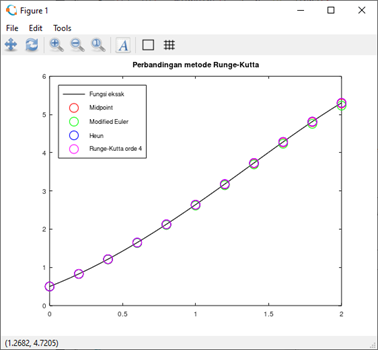

function [t, w] = euler(f, a, b, n, alpha)
h = (b - a) / n;
t = zeros(n + 1, 1);
w = zeros(n + 1, 1);
t(1) = a;
w(1) = alpha;
for i = 1: n
t(i + 1) = t(i) + h;
m1 = f(t(i), w(i));
w(i + 1) = w(i) + h * m1;
endfor
endfunctionWeek-02.2 (Metode Euler dan Rungge-Kutta)
Kembali ke Persamaan Diferensial Numerik
Metode Euler
Metode Euler metode paling dasar dalam mencari solusi dari permasalahan nilai awal dari suatu PD. Metode ini dikembangkan dari Teorema Taylor:
Metode Euler metode paling dasar dalam mencari solusi dari permasalahan nilai awal dari suatu PD. Metode ini dikembangkan dari Teorema Taylor:
\[ y\left(t_{i+1}\right)=y\left(t_i\right)+\left(t_{i+1}-t_I\right) y^{\prime}\left(t_i\right)+\cdots \]
Misalkan kita mempunyai suatu persamaan diferensial dengan nilai awal:
\[ \begin{gathered} y^{\prime}=f(t, y), a \leq t \leq b \\ y(a)=\alpha \end{gathered} \]
maka solusi secara numeriknya adalah \(w_i= y(t_i)\), dengan:
\[ \begin{gathered} w_1=\alpha \\ w_{i+1}=w_i+h f\left(t_i, w_i\right), \quad i=1,2, \ldots, n \end{gathered} \]
dengan \(n+1\in \mathbb{N}\) menyatakan banyaknya titik nantinya.
Solusi kita akan berupa titik yang nantinya dapat menggunakan interpolasi untuk nilai yang tidak dimuat di \(w_i\)
Algoritma untuk metode Euler adalah sebagai berikut:
Disini, inputnya adalah: - \(\mathrm{f}=\mathrm{E}(t, y)\) merupakan suatu fungsi, - a dan b berturut-turut batas bawah dan batas atas dari \(t\) - \(\mathrm{n}\) merupakan pembagi untuk step size dan \(\mathrm{n}+1\) yang digunakan sebagai banyaknya titik, dan - alpha merupakan nilai awal Sekarang akan kita coba gunakan untuk menyelesaikan suatu PD. Misal diberikan PD sebagai berikut: \[ \begin{aligned} & y^{\prime}=y-t^2+1,0 \leq t \leq 2 \\ & y(0)=0.5 \end{aligned} \]
maka kita dapat mendefinisikan f=@(t, y)\left(y-t^{\wedge} 2+1\right), a=0, b=2, dan alpha \(=0.5\) (@ disini menyatakan fungsi anonim yang cara kerjanya mirip dengan fungsi lambda pada Python), sehingga untuk \(n=10\), diperoleh kode sebagai berikut:
f = @(t, y) (y-t^2 + 1);
a = 0;
b = 2;
n = 10;
alpha= 0.5;
[t_euler, w_euler] = euler(f, a, b, n, alpha)Untuk visualisasinya, kita akan membuat plot dari hasil yang kita peroleh. Sebagai referensi, solusi eksak dari PD tersebut adalah \(y(t)=(t+1)^2- 0.5 e^t\)
Kita tambahkan kode berikut pada file:$
sln = @(t) (t + 1)^2 - 0.5 * exp(t);
fplot(sln, [0, 2], 'b');
hold on;
scatter(t_euler, w_euler, 'r');
legend('Solusi eksak', 'Metode Euler');
title("Metode Euler")Saat dijalankan, akan muncul jendela pop-up yang berisi plot yang telah dibuat.

Penjelasan: * sln berisi fungsi referensi kita untuk di-plot dan dibandingkan. * fplot(f, [a, b]) akan menampilkan plot dari suatu fungsi f dengan domain [a, b]. Argumen tambahan ‘b’ memberi warna biru pada plot. * hold on akan menahan plot yang ada agar kita bisa menampilkan banyak plot sekaligus. * scatter(x, y) akan menampilkan x-y scatter plot. * legend memberi legenda pada plot yang telah dibuat. Legenda tersebut dimasukkan berurutan mulai dari plot yang didefinsikan terlebih dahulu * title memberi judul pada plot
Metode Runge-kutta dan variasinya
- Metode midpoint \[ \begin{gathered} w_1=\alpha \\ w_{i+1}=w_i+h f\left(t_i+\frac{h}{2}, w_i+\frac{h}{2} f\left(t_i, w_i\right)\right) \end{gathered} \]
- Metode Euler modifikasi \[ \begin{gathered} w_1=\alpha \\ w_{i+1}=w_i+\frac{h}{2}\left(f\left(t_i, w_i\right)+f\left(t_{i+1}, w_i+h f\left(t_i, w_i\right)\right)\right) \end{gathered} \]
- Metode Heun (tidak umum digunakan) \[ \begin{gathered} w_1=\alpha \\ w_{i+1}=w_i+\frac{h}{4}\left(f\left(t_i, w_i\right)+3 f\left(t_i+\frac{2 h}{3}, w_i+\frac{2 h}{3} f\left(t_i+\frac{h}{3}, w_i+\frac{h}{3} f\left(t_i, w_i\right)\right)\right)\right) \end{gathered} \]
- Metode Runge-Kutta orde 4 \[ \begin{aligned} & w_1=\alpha \\ & m_1=h f\left(t_i, w_i\right) \\ & m_2=h f\left(t_i+\frac{h}{2}, w_i+\frac{m_1}{2}\right) \\ & m_3=h f\left(t_i+\frac{h}{2}, w_i+\frac{m_2}{2}\right) \\ & m_4=h f\left(t_{i+1}, w_i+m_3\right) \\ & w_{i+1}=w_i+\frac{m_1+2 m_2+2 m_3+m_4}{6} \end{aligned} \]
Berikut adalah list algoritmanya.
function [t, w] = midpoint(f, a, b, n, alpha)
h = (b - a) / n;
t = zeros(n + 1, 1);
w = zeros(n + 1, 1);
t(1) = a;
w(1) = alpha;
for i = 1: n
t(i + 1) = t(i) + h;
m1 = f(t(i), w(i));
m2 = f(t(i) + (h / 2), w(i) + (h / 2) * m1);
w(i + 1) = w(i) + h * m2;
endfor
endfunctionfunction [t, w] = modeuler(f, a, b, n, alpha)
h = (b - a) / n;
t = zeros(n + 1, 1);
w = zeros(n + 1, 1);
t(1) = a;
w(1) = alpha;
for i = 1: n
t(i + 1) = t(i) + h;
m1 = f(t(i), w(i));
m2 = f(t(i + 1), w(i) + h * m1);
w(i + 1) = w(i) + h * (m1 + m2) / 2;
endfor
endfunctionfunction [t, w] = heun(f, a, b, n, alpha)
h = (b - a) / n;
t = zeros(n + 1, 1);
w = zeros(n + 1, 1);
t(1) = a;
w(1) = alpha;
for i = 1: n
t(i + 1) = t(i) + h;
m1 = f(t(i), w(i));
m2 = f(t(i) + (h / 3), w(i) + (h / 3) * m1);
m3 = f(t(i) + (2 * h / 3), w(i) + (2 * h / 3) * m2);
m4 = m1 + 3 * m3;
w(i + 1) = w(i) + (h / 4) * m4;
endfor
endfunctionfunction [t, w] = rko4(f, a, b, n, alpha)
h = (b - a) / n;
t = zeros(n + 1, 1);
w = zeros(n + 1, 1);
t(1) = a;
w(1) = alpha;
for i = 1: n
t(i + 1) = t(i) + h;
k1 = h * f(t(i), w(i));
k2 = h * f(t(i) + (h / 2), w(i) + (k1 / 2));
k3 = h * f(t(i) + (h / 2), w(i) + (k2 / 2));
k4 = h * f(t(i + 1), w(i) + k3);
w(i + 1) = w(i) + (k1 + 2 * k2 + 2 * k3 + k4) / 6;
endfor
endfunctionf = @(t, y) (y - t ^ 2 + 1);
a = 0;
b = 2;
alpha = 0.5;
[t1, w1] = midpoint(f, a, b, 10, alpha);
[t2, w2] = modeuler(f, a, b, 10, alpha);
[t3, w3] = heun(f, a, b, 10, alpha);
[t4, w4] = rko4(f, a, b, 10, alpha);
sln = @(t) (t + 1) ^ 2 - 0.5 * exp(t);
fplot(sln, [0, 2], 'k');
hold on;
scatter(t1, w1, 'r');
scatter(t2, w2, 'g');
scatter(t3, w3, 'b');
scatter(t4, w4, 'm');
legend('Fungsi eksak', 'Midpoint', 'Modified Euler', 'Heun',
'Runge-Kutta orde 4');
legend("location", "northwest");
title('Perbandingan metode Runge-Kutta');